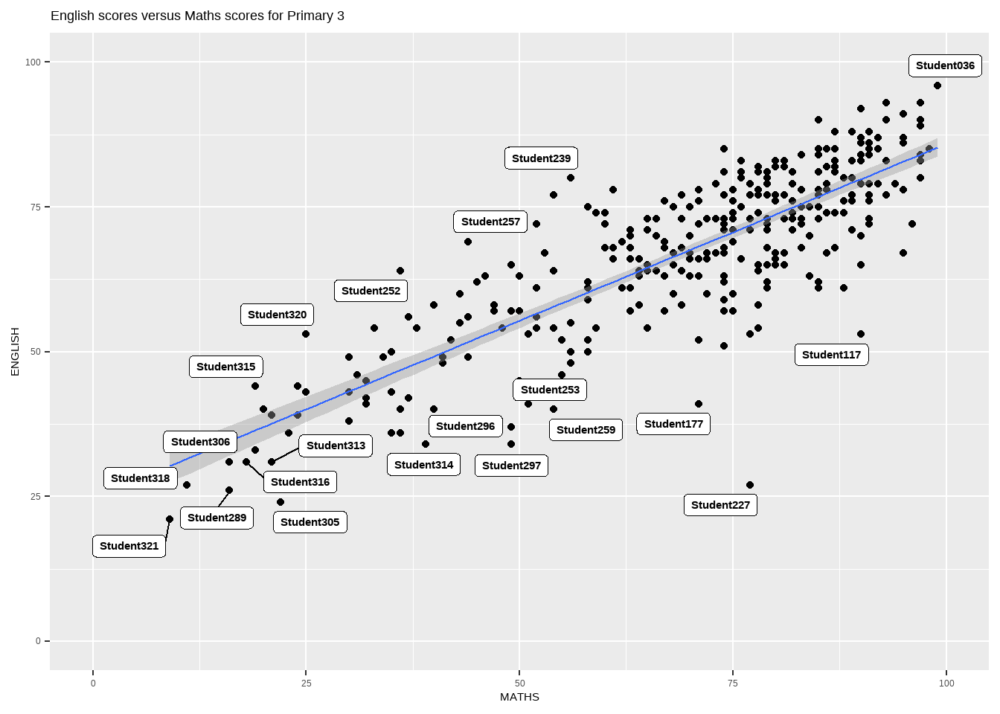
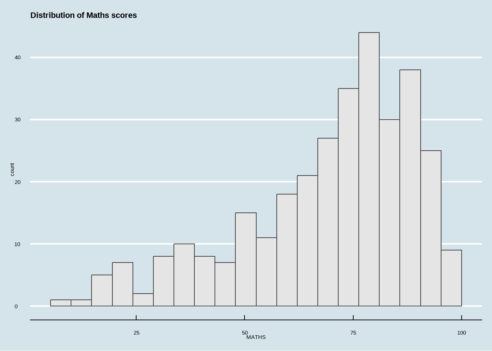

pacman::p_load(ggrepel, patchwork, ggthemes, hrbrthemes, tidyverse)Hands-on Exercise 2
Extension of ggplot 2
exam_data <- read_csv("Exam_data.csv")Rows: 322 Columns: 7
── Column specification ────────────────────────────────────────────────────────
Delimiter: ","
chr (4): ID, CLASS, GENDER, RACE
dbl (3): ENGLISH, MATHS, SCIENCE
ℹ Use `spec()` to retrieve the full column specification for this data.
ℹ Specify the column types or set `show_col_types = FALSE` to quiet this message.Overlapping Annotations
ggplot(data=exam_data,
aes(x= MATHS,
y=ENGLISH)) +
geom_point() +
geom_smooth(method=lm,
size=0.5) +
geom_label(aes(label = ID),
hjust = .5,
vjust = -.5) +
coord_cartesian(xlim=c(0,100),
ylim=c(0,100)) +
ggtitle("English scores versus Maths scores for Primary 3")Warning: Using `size` aesthetic for lines was deprecated in ggplot2 3.4.0.
ℹ Please use `linewidth` instead.`geom_smooth()` using formula = 'y ~ x'Using ggrepel to repel overlapping text
ggplot(data=exam_data,
aes(x= MATHS,
y=ENGLISH)) +
geom_point() +
geom_smooth(method=lm,
size=0.5) +
geom_label_repel(aes(label = ID),
fontface = "bold") +
coord_cartesian(xlim=c(0,100),
ylim=c(0,100)) +
ggtitle("English scores versus Maths scores for Primary 3")`geom_smooth()` using formula = 'y ~ x'Warning: ggrepel: 301 unlabeled data points (too many overlaps). Consider
increasing max.overlaps
Ggplot2 Themes:
Classic Theme
ggplot(data=exam_data,
aes(x = MATHS)) +
geom_histogram(bins=20,
boundary = 100,
color="grey25",
fill="grey90") +
theme_classic() +
ggtitle("Distribution of Maths scores") Economist Theme
ggplot(data=exam_data,
aes(x = MATHS)) +
geom_histogram(bins=20,
boundary = 100,
color="grey25",
fill="grey90") +
ggtitle("Distribution of Maths scores") +
theme_economist()
ggplot(data=exam_data,
aes(x = MATHS)) +
geom_histogram(bins=20,
boundary = 100,
color="grey25",
fill="grey90") +
ggtitle("Distribution of Maths scores") +
theme_ipsum(base_family = "sans")Combining ggplot2 graphs
ggplot(data=exam_data,
aes(x = MATHS)) +
geom_histogram(bins=20,
boundary = 100,
color="grey25",
fill="grey90") +
ggtitle("Distribution of Maths scores") +
theme_ipsum(axis_title_size = 18,
base_size = 15,
grid = "Y",
base_family = "sans")p1 <- ggplot(data=exam_data,
aes(x = MATHS)) +
geom_histogram(bins=20,
boundary = 100,
color="grey25",
fill="grey90") +
coord_cartesian(xlim=c(0,100)) +
ggtitle("Distribution of Maths scores")p2 <- ggplot(data=exam_data,
aes(x = ENGLISH)) +
geom_histogram(bins=20,
boundary = 100,
color="grey25",
fill="grey90") +
coord_cartesian(xlim=c(0,100)) +
ggtitle("Distribution of English scores")p3 <- ggplot(data=exam_data,
aes(x= MATHS,
y=ENGLISH)) +
geom_point() +
geom_smooth(method=lm,
size=0.5) +
coord_cartesian(xlim=c(0,100),
ylim=c(0,100)) +
ggtitle("English scores versus Maths scores for Primary 3")Combining 2 Plots side by side
p1 + p2Combining 3 graphs - Using “/” to stack 2 graphs and “|” to place the plots beside each other
(p1 / p2) | p3`geom_smooth()` using formula = 'y ~ x'Placing plots next to each other based on the provided layout - using inset_element
inset_element:
Left = 0.02 - left edge start 2% from left side of the main plot
Bottom = 0.7 - Bottom edge start 70% from the bottom of the main plot (Near the top)
Right = 0.5 - Right edge ends at 50% of the width
top = 1 top edge ends at 100% of height
p3 + inset_element(p2,
left = 0.02,
bottom = 0.7,
right = 0.5,
top = 1)`geom_smooth()` using formula = 'y ~ x'Using patchwork and theme together
patchwork <- (p1 / p2) | p3
patchwork & theme_economist()`geom_smooth()` using formula = 'y ~ x'
Visual Analytics Methods of the Week
Plotting a Box Plot of the English scores of the different classes
From the box plot below, there is a downward trend of English scores from 3A to 3I, showing that students from Class 3A generally scored better than students in the other classes
There are also some classes with outliers, for example class 3E and 3F where there are one or more students who scored significantly lower than the rest of the class
ggplot(data=exam_data, aes(y = ENGLISH, x= CLASS)) + geom_boxplot()Plotting a Violin Plot of science scores in the different Races
From the violin plot, it can be seen that there is a majority of “Chinese” students who scored in the 75 range and “Other” students scoring in the 68 range for science subject
For Indian students, their science scores are quite evenly spread out from 12.5 to 87.5
ggplot(data=exam_data,
aes(y = SCIENCE,
x= RACE)) +
geom_violin()Plotting a pie chart of the proportion of the different races
It can be seen from the pie chart that more than half of the student population are Chinese and the next majority is Malay
The Indian and Other students seem to have the same proportion
library(dplyr)
race_counts <- exam_data %>%
count(RACE)
ggplot(race_counts, aes(x = "", y = n, fill = RACE)) +
geom_bar(stat = "identity", width = 1) +
coord_polar(theta = "y") +
labs(title = "Student Distribution by Race",
y = NULL,
x = NULL,
fill = "Race") +
theme_void() +
theme(plot.title = element_text(hjust = 0.5, size = 16))Raincloud Plots of Scores by Gender
library(ggdist)
# ensure GENDER is a factor
exam_data$GENDER <- as.factor(exam_data$GENDER)
a1 <- ggplot(exam_data, aes(x = ENGLISH, y = GENDER, fill = GENDER)) +
# lighter half-density cloud
stat_halfeye(
side = "right",
adjust = 0.5,
width = 0.6,
justification = 0.1,
.width = 0,
point_colour = NA,
alpha = 0.3
) +
# central boxplot
geom_boxplot(
width = 0.12,
outlier.shape = NA,
position = position_nudge(y = 0.2),
alpha = 0.8
) +
# jittered points on top
geom_jitter(
width = 0,
height = 0.15,
size = 1.5,
alpha = 0.6,
aes(color = GENDER)
) +
# matching palette
scale_fill_manual(values = c("Female" = "#00AFBB", "Male" = "#FC4E07")) +
scale_color_manual(values = c("Female" = "#00AFBB", "Male" = "#FC4E07")) +
# side-by-side panels
facet_wrap(~ GENDER, nrow = 1, scales = "free_y") +
theme_ipsum_rc(base_size = 12) +
labs(
title = "Raincloud Plot of English Scores by Gender",
x = "English Score",
y = NULL
) +
theme(
legend.position = "none",
axis.text.y = element_blank(),
axis.ticks.y = element_blank(),
panel.grid.major.y = element_blank()
)# ensure GENDER is a factor
exam_data$GENDER <- as.factor(exam_data$GENDER)
a2 <- ggplot(exam_data, aes(x = MATHS, y = GENDER, fill = GENDER)) +
# lighter half-density cloud
stat_halfeye(
side = "right",
adjust = 0.5,
width = 0.6,
justification = 0.1,
.width = 0,
point_colour = NA,
alpha = 0.3
) +
# central boxplot
geom_boxplot(
width = 0.12,
outlier.shape = NA,
position = position_nudge(y = 0.2),
alpha = 0.8
) +
# jittered points on top
geom_jitter(
width = 0,
height = 0.15,
size = 1.5,
alpha = 0.6,
aes(color = GENDER)
) +
# matching palette
scale_fill_manual(values = c("Female" = "#00AFBB", "Male" = "#FC4E07")) +
scale_color_manual(values = c("Female" = "#00AFBB", "Male" = "#FC4E07")) +
# side-by-side panels
facet_wrap(~ GENDER, nrow = 1, scales = "free_y") +
theme_ipsum_rc(base_size = 12) +
labs(
title = "Raincloud Plot of Maths Scores by Gender",
x = "English Score",
y = NULL
) +
theme(
legend.position = "none",
axis.text.y = element_blank(),
axis.ticks.y = element_blank(),
panel.grid.major.y = element_blank()
)# ensure GENDER is a factor
exam_data$GENDER <- as.factor(exam_data$GENDER)
a3 <- ggplot(exam_data, aes(x = SCIENCE, y = GENDER, fill = GENDER)) +
# lighter half-density cloud
stat_halfeye(
side = "right",
adjust = 0.5,
width = 0.6,
justification = 0.1,
.width = 0,
point_colour = NA,
alpha = 0.3
) +
# central boxplot
geom_boxplot(
width = 0.12,
outlier.shape = NA,
position = position_nudge(y = 0.2),
alpha = 0.8
) +
# jittered points on top
geom_jitter(
width = 0,
height = 0.15,
size = 1.5,
alpha = 0.6,
aes(color = GENDER)
) +
# matching palette
scale_fill_manual(values = c("Female" = "#00AFBB", "Male" = "#FC4E07")) +
scale_color_manual(values = c("Female" = "#00AFBB", "Male" = "#FC4E07")) +
# side-by-side panels
facet_wrap(~ GENDER, nrow = 1, scales = "free_y") +
theme_ipsum_rc(base_size = 12) +
labs(
title = "Raincloud Plot of Science Scores by Gender",
x = "English Score",
y = NULL
) +
theme(
legend.position = "none",
axis.text.y = element_blank(),
axis.ticks.y = element_blank(),
panel.grid.major.y = element_blank()
)Using “/” to combine the charts, we can get the figures below.
Diverging Stacked Bar Chart split by Gender
The subjects are split into 3 bands for each subject: Low(0-39), Medium(40-69), High(70-100).
From the charts, there are more females in the High band for English and Science Subjects while the Math subjects are more or less equal for both females and males.
In the medium band for English, there are more males then females while for Math and Science, there are more females than males.
In the low band, however, there are consistently more males than females.
To conclude, females generally score higher for English and Science subjects and score higher than males in general.
# Load libraries
library(dplyr)
library(ggplot2)
library(tidyr)
library(forcats)
# 1. Categorize each subject into performance bands
exam_bands <- exam_data %>%
mutate(
ENGLISH_BAND = cut(ENGLISH, breaks = c(-Inf, 39, 69, 100),
labels = c("Low", "Medium", "High")),
MATHS_BAND = cut(MATHS, breaks = c(-Inf, 39, 69, 100),
labels = c("Low", "Medium", "High")),
SCIENCE_BAND = cut(SCIENCE, breaks = c(-Inf, 39, 69, 100),
labels = c("Low", "Medium", "High"))
)
# 2. Reshape data to long format for faceting
long_bands <- exam_bands %>%
select(GENDER, ENGLISH_BAND, MATHS_BAND, SCIENCE_BAND) %>%
pivot_longer(cols = ends_with("_BAND"),
names_to = "SUBJECT",
values_to = "PERFORMANCE") %>%
mutate(
SUBJECT = recode(SUBJECT,
ENGLISH_BAND = "English",
MATHS_BAND = "Maths",
SCIENCE_BAND = "Science"),
PERFORMANCE = factor(PERFORMANCE, levels = c("Low", "Medium", "High"))
)
# 3. Prepare data for plotting
plot_data <- long_bands %>%
count(SUBJECT, GENDER, PERFORMANCE) %>%
mutate(n = ifelse(GENDER == "Male", -n, n))
# 4. Create diverging stacked bar chart with facets
ggplot(plot_data, aes(x = PERFORMANCE, y = n, fill = GENDER)) +
geom_bar(stat = "identity", width = 0.7) +
coord_flip() +
facet_wrap(~ SUBJECT, ncol = 1, scales = "free_y") +
scale_y_continuous(labels = abs) +
scale_fill_manual(values = c("Female" = "#00AFBB", "Male" = "#FC4E07")) +
labs(
title = "Diverging Stacked Bar Charts: Performance Bands by Gender",
x = "Performance Band",
y = "Number of Students"
) +
theme_minimal(base_size = 14)